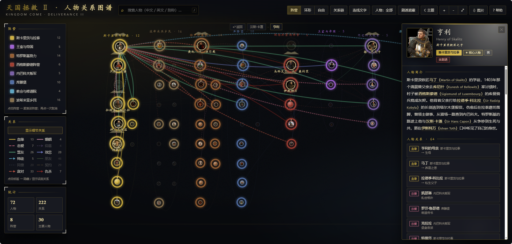
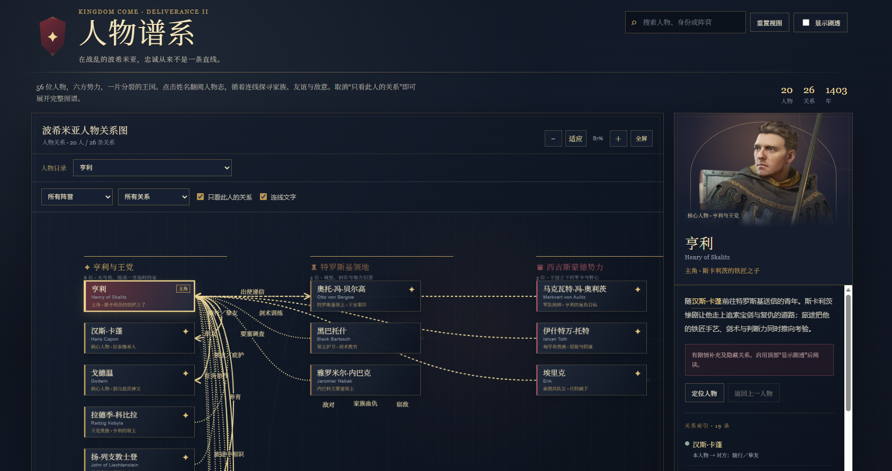

✦
玩《天国：拯救 2》的时候，各方人物一批批登场，加上对外国名字不太敏感，很容易分不清谁属于哪个派系，也理不清各方势力的恩怨情仇。网上又找不到合适的人物关系图谱，于是把同一份提示词分别交给 DeepSeek 和 GPT6 SOL，各生成一版，又改了几轮。两版各有千秋，放在这里方便对照查询。
☾
抄本甲 · DeepSeek V4.1全功能关系图谱
三种布局、十二类关系、两套配色，把整张关系网交给你的战情室。

夜幕主题 · 阵营布局 · 12 类关系图例常驻左栏
- 阵营 / 环形 / 自由 三种布局，阵营分簇自动成团
- 12 类关系可逐类开关：血缘、婚姻、恋爱、盟友、效忠、敌对、仇杀……
- 人物分核心 / 主要 / 次要三级，切档后画面自动精简
- 夜幕（金）与羊皮纸（日间）两套配色
- 关系链：点两个人，自动高亮最短关系路径
- 剧透遮蔽、连线文字、PNG 导出与键盘快捷键
- 单文件离线可用：d3 与人物立绘全部内联在页面里
打开 DeepSeek V4.1 版
左边一张关系网，右边一页人物档案，点到谁就读谁。

阵营全图 · 人物卡片节点 · 右侧人物档案栏
- 右侧常驻人物档案：身份、简介、剧情补充、关系索引
- 阵营与关系类型下拉筛选，可切换「只看此人的关系」
- 连线箭头标方向，图例分友好、家族、敌对、效忠、感情五类
- 显示剧透开关，关键亲缘与结局默认收起
- 人物头像联网加载，取不到时退回纹章占位
- 每个人物附独立资料来源页链接，便于对照原文
- 移动端人物目录 + 全屏图谱
打开 GPT6 SOL 版
两版对照
同一批资料，两种看法；按你想要的读法挑一版
先看清剧透
两版都默认收起关键剧情：亲缘真相、背叛与结局需要手动开启「剧透」才会显示，怕剧透就先别开。
要不要联网
DeepSeek 版把素材内联在文件里，断网也能看；GPT6 版的人物头像来自公开 Wiki，需要联网，取不到时会显示纹章占位。
第一次打开
DeepSeek 版约 1.8 MB，首次加载要等一会儿；之后浏览器会缓存。手机上建议横屏看图谱，点人物再切竖向读档案。